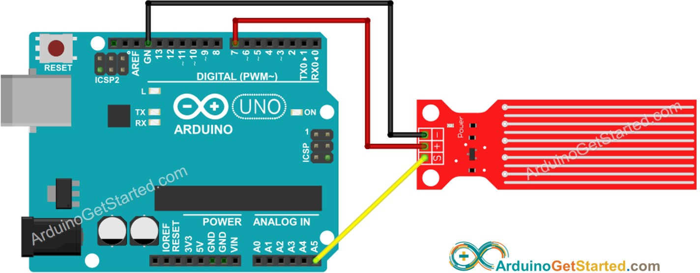
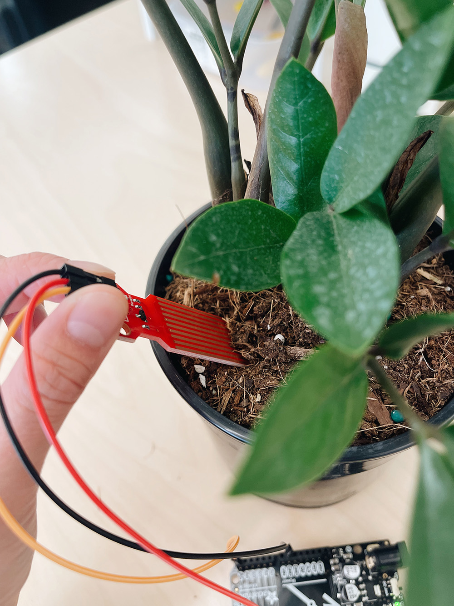
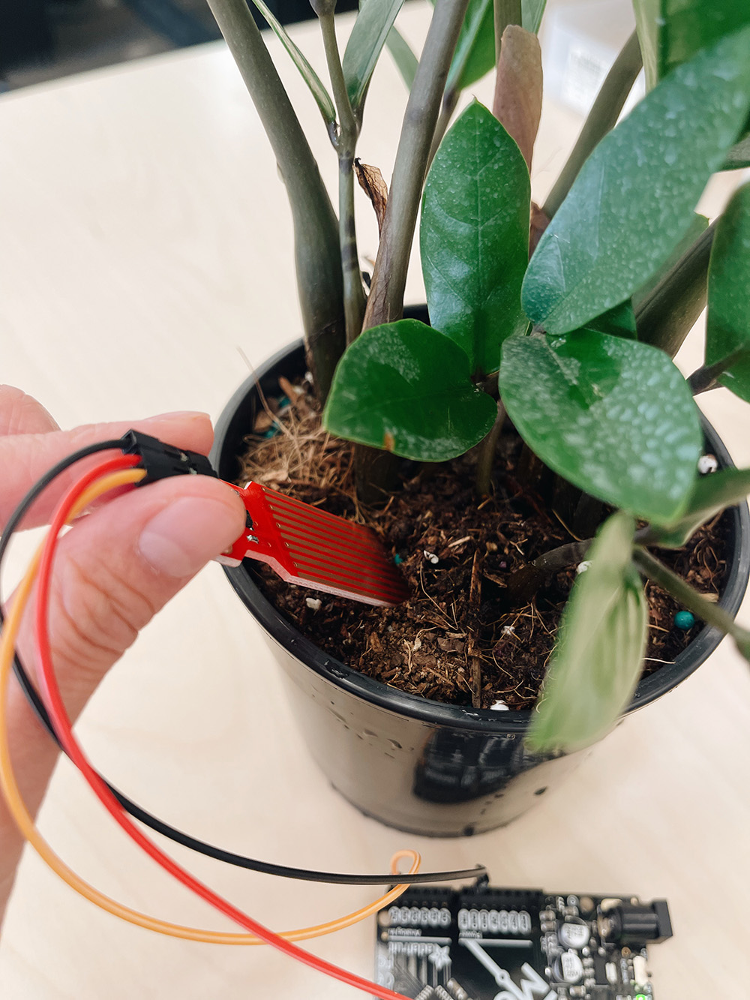
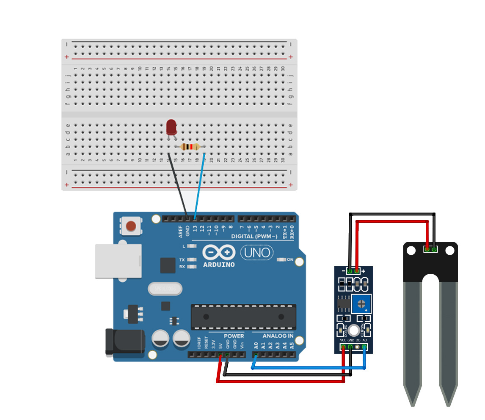
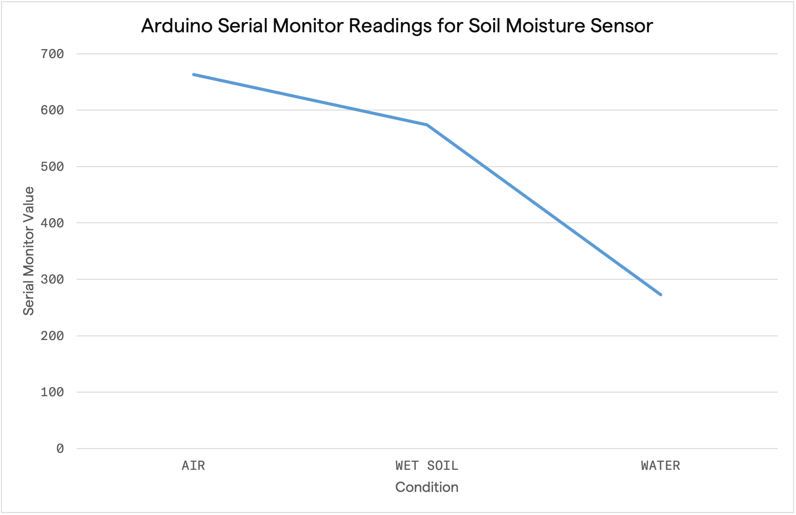
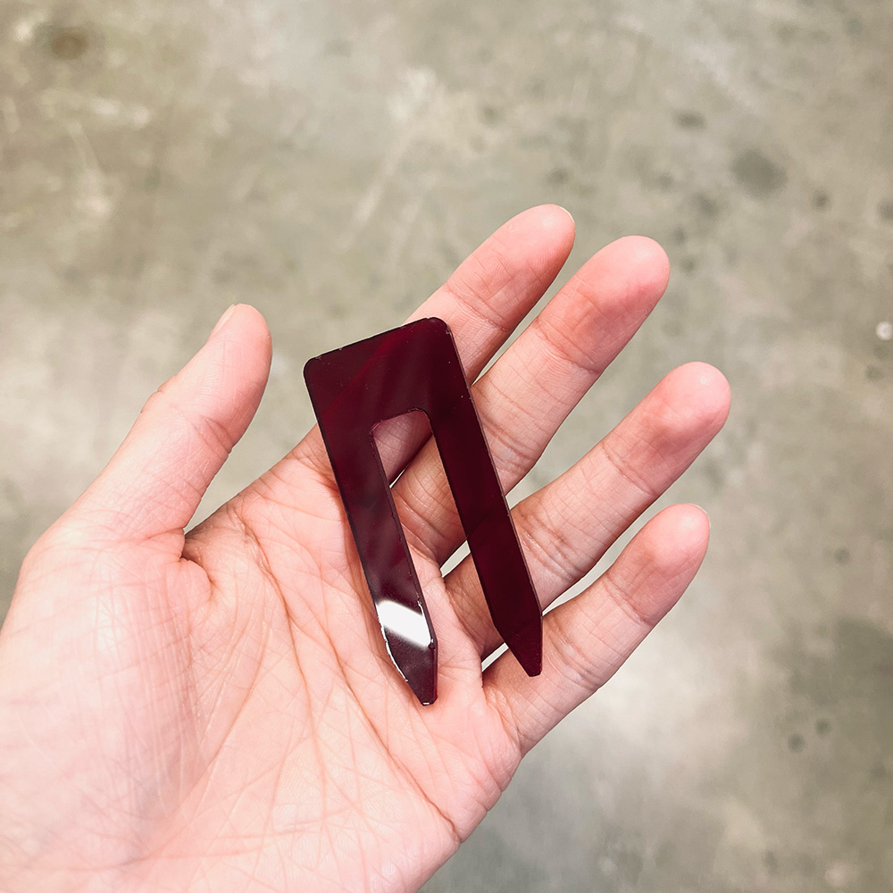
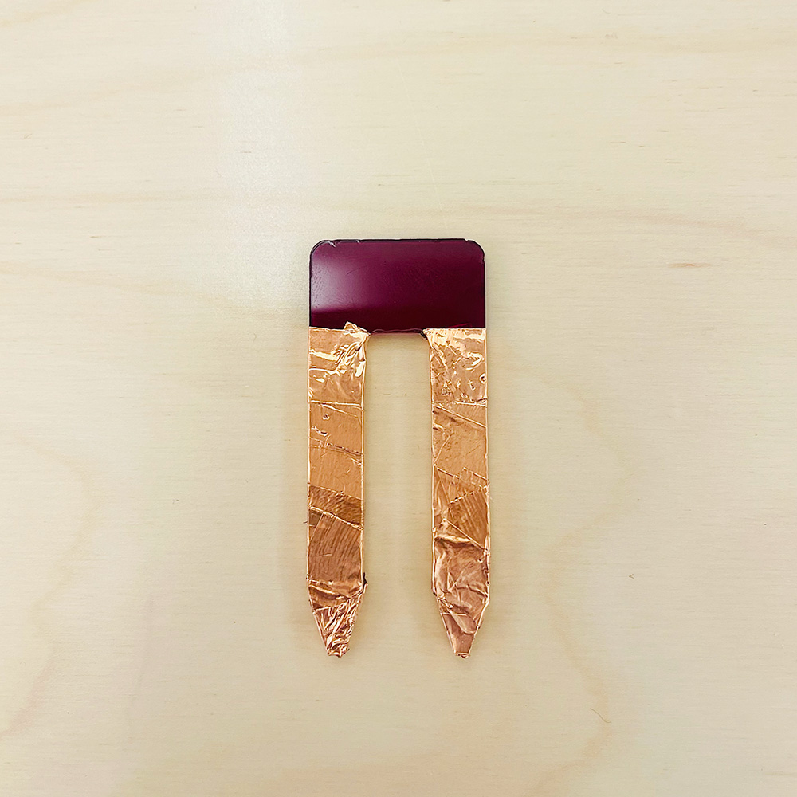
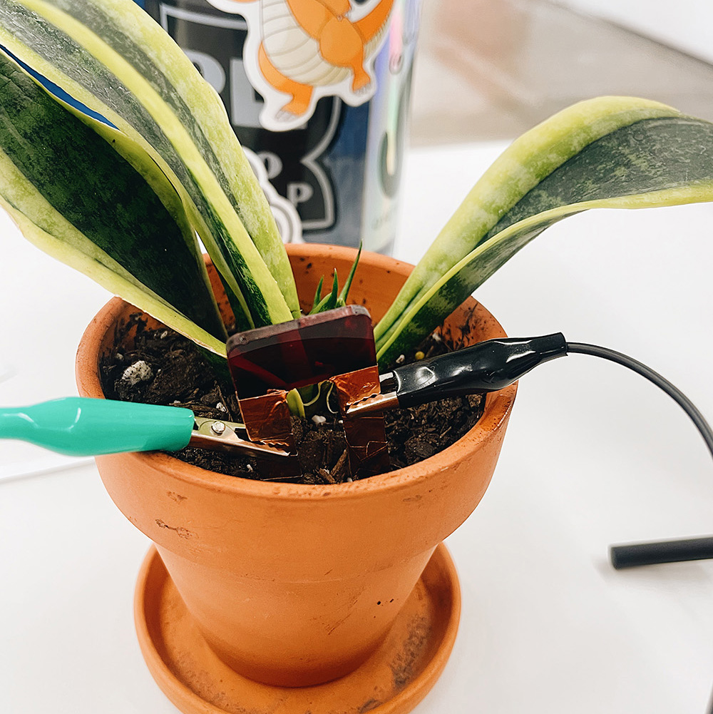
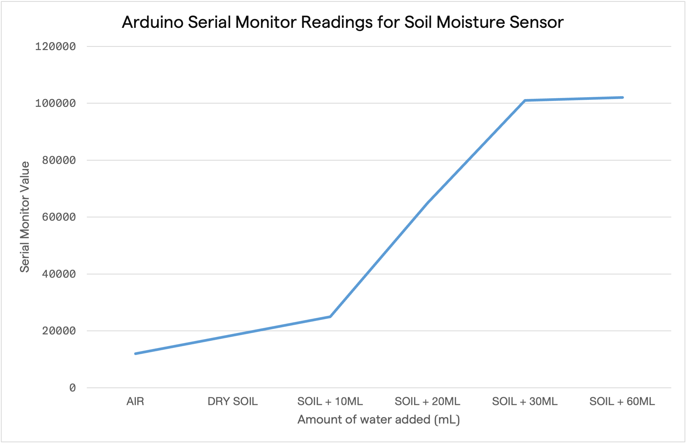
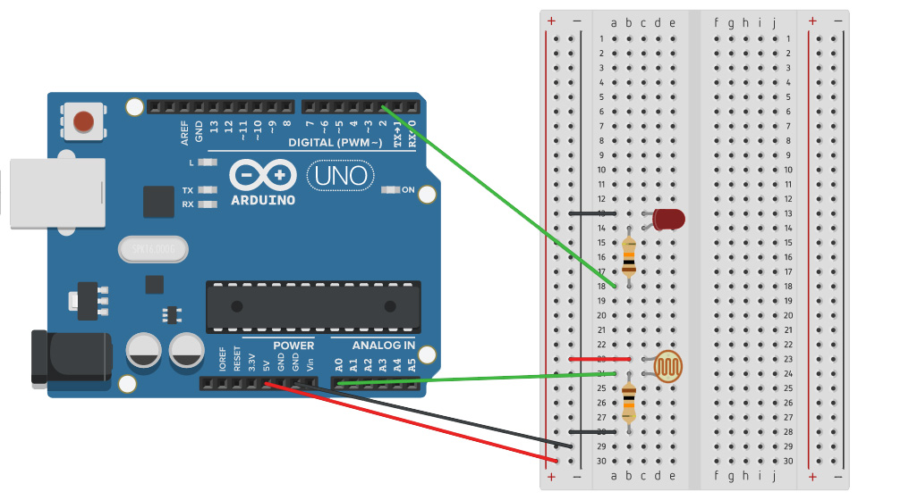

Welcome to my PS70 portfolio! Here you will find weekly progress of my digital fabrication journey.
06: sensors and electronic input devices
Rebecca Brand and I collaborated to build & test a moisture sensor and compare them with two other sensors in the lab. We have a shared inability to keep houseplants alive as we either over or under water them. We thought this would be an educational and fun way to both learn about capacitive sensors and figure out how much/little water to give our plants to keep them alive. The sensors we experimented with include: a water level sensor, a soil moisture sensor, a DIY soil moisture sensor, and a photoresistor (for something different.)
1. Water level sensor
The first sensor I tried was a water level sensor. The sensor has 5 power traces and 5 sense traces which are interlaced in parallel. The traces act as a variable resistance, and the resistance is inversely proprotional to the height of the water. i.e., the more water the sensor is immersed in, the lower the resistance, and vice versa.
Usually, I would connect the sensor's VCC and GND pins to the Arduino's 5V and GND pins, repsectively. However for this sensor, it was recommended to connect the VCC pin to a digital pin because if power is constantly provided to the sensor via the VCC pin, it could make the sensor eletrochemically corrode faster.

- --> GND
+ --> PIN 7
S --> A5
+ --> PIN 7
S --> A5
When the sensor not in water, the serial monitor prints "0". When the sensor is placed in water, it prints values >0.
A limitation of this senesor is that it measures water levels, not moisture. i.e., the maximum height of the water that can be detected is equal to the height of the sensor. This could be useful to detect something like water leakage, but not so useful for measure soil moisture.

That said, when I was using the water sensor I didn't realize it measured water levels instead of moisture levels. So, I did put it into soil to see if it could detect any changes before and after watering my plant - and it did!

DRY SOIL SERIAL MONITOR READING: 0

WET SOIL SERIAL MONITOR READING: ~ 390
ARDUINO CODE
#define POWER_PIN 7
#define SIGNAL_PIN A5
int value = 0; // variable to store the sensor value
void setup() {
Serial.begin(9600);
pinMode(POWER_PIN, OUTPUT); // configure D7 pin as an OUTPUT
digitalWrite(POWER_PIN, LOW); // turn the sensor OFF
}
void loop() {
digitalWrite(POWER_PIN, HIGH); // turn the sensor ON
delay(10); // wait 10 milliseconds
value = analogRead(SIGNAL_PIN); // read the analog value from sensor
digitalWrite(POWER_PIN, LOW); // turn the sensor OFF
Serial.print("Sensor value: ");
Serial.println(value);
delay(1000);
}
2. Soil moisture sensor
The next sensor we tested was a fork-shaped soil moisture sensor, which measures electrical resistance between the two electrodes of the sensor. Similar to the water level sensor, if there is more water in the soil, there is better conductivity and thus lower resistance, and vice versa. There is also a comparator that connects the sensor to the Arduino; it takes the analog output from the from the sensor, digitizes it, and then sends it to the digital output of the Arduino. I also added an LED so that the LED turns on if the moisture level went below a specified threshold value, which in this case was 300.
I recorded the values for when I placed the sensor in: air, wet soil (we already watered the plant by the time we got to this sensor, so we didn't get the dry soil measurement), and a cup of water. The light only turned on when it was submerged in water whcih makes sense as that condition that the highest conductivity, and thus the least resistance/lower number.

Arduino --> Comparator
3V --> VCC
GND --> GND
A0 --> A0
Comparator --> Sensor
+ --> +
- --> -
Arduino --> LED
D13 --> +
GND --> -
3V --> VCC
GND --> GND
A0 --> A0
Comparator --> Sensor
+ --> +
- --> -
Arduino --> LED
D13 --> +
GND --> -

| Condition | Serial Monitor Value |
|---|---|
| Exposed to air only | 663 |
| Wet soil | 574 |
| Submerged in water | 273 |

ARDUINO CODE
/int sensorPin = A0;
int sensorValue;
int limit = 300;
void setup() {
Serial.begin(9600);
pinMode(13, OUTPUT);
}
void loop() {
sensorValue = analogRead(sensorPin);
Serial.println("Analog Value : ");
Serial.println(sensorValue);
if (sensorValue < limit) {
digitalWrite(13, HIGH);
}
else {
digitalWrite(13, LOW);
}
delay(1000);
}
3. DIY Soil moisture sensor
The DIY "soil moisture" sensor uses tx-rx (transmit-receive) sensing sketch we learned in class. I laser-cutted a two-pronged sensor - similar to the soil moisture sensor previously described - using 1/4" acrylic and wrapped copper tape around each prong. I then connected alligator clips from each prong to analog pin A3 and digital pin 4.



This time, I added 10mL of water at a time to better understand the rate of change of the capacitive values read through the Arduino. I noticed that once I was added ~30mL of water, adding more water to the soil didn't increase the value read out by the Serial Monitor by much more. i.e., putting the sensor in soil with 60mL of water vs. submerging the sensor in a cup of water both gave a reading of ~102000.
| Condition | Serial Monitor Value |
|---|---|
| Exposed to air only | 12000 |
| Dry soil | 18500 |
| Soil + 10mL water | 25000 |
| Soil + 20mL water | 65000 |
| Soil + 30mL water | 101000 |
| Soil + 60mL water | 102000 |
| Submerged in water | 102000 |

ARDUINO CODE
long result; //variable for the result of the tx_rx measurement.
int analog_pin = A3;
int tx_pin = 4;
void setup() {
pinMode(tx_pin, OUTPUT); //Pin 4 provides the voltage step
Serial.begin(9600);
}
void loop() {
result = tx_rx();
Serial.println(result);
}
long tx_rx(){ // Function to execute rx_tx algorithm and return a value
// that depends on coupling of two electrodes.
// Value returned is a long integer.
int read_high;
int read_low;
int diff;
long int sum;
int N_samples = 100; // Number of samples to take. Larger number slows it down, but reduces scatter.
sum = 0;
for (int i = 0; i < N_samples; i++){
digitalWrite(tx_pin,HIGH); // Step the voltage high on conductor 1.
read_high = analogRead(analog_pin); // Measure response of conductor 2.
delayMicroseconds(100); // Delay to reach steady state.
digitalWrite(tx_pin,LOW); // Step the voltage to zero on conductor 1.
read_low = analogRead(analog_pin); // Measure response of conductor 2.
diff = read_high - read_low; // desired answer is the difference between high and low.
sum += diff; // Sums up N_samples of these measurements.
}
return sum;
} // End of tx_rx function.
Comparison
If I could test these sensors again, I would have tested them in all of the same conditions (i.e., air, dry soil, soil + x mL of water, andsubmerged in water) and then mapped the values to the same range to more easily compare the differences. However, since we used the sensors across different time periods, so we weren't able to do so. That said, here's a chart that compares of the values we did manage to measure in the same conditions.
Two things to note: first, as mentioned, the water level sensor is meant to measure water level height, not moisture levels. Second, while both the water level sensor and DIY sensor values increase as resistance decreases (i.e., more water -> higher value), the inverse is true for the soil moisture sensor (i.e., more water -> lower value).
| Condition | Air only | Wet soil | Submerged in water |
|---|---|---|---|
| Water level sensor | 0 | 390 | 500 |
| Soil moisture sensor | 663 | 574 | 273 |
| DIY sensor sensor | 12000 | 25000 | 102000 |
4. *BONUS* Photoresistor
I wanted measure something other than water, so I tried using a photoresistor, whos resistivity varies according to the amount of light received. The setup was fairly simple and I decided to add an LED to the circuit so that if the value went below a certain threshold, the LED would light up.

First pin --> 5V
Second pin --> A0
Second pin --> GND
Second pin --> A0
Second pin --> GND
As you may have noticed from the schematic and the Arduino code, this setup is very similar to the setup for the soil moisture sensor. In both cases, a value is read from an analog pin. For the soil moisture sensor, when the moisture levels increase, resistance decreases. For the photoresistor, when light increases, resistance decreases. I thought it was interesting that while the sensors measured different physical quantities, they followed the same principles.

ARDUINO CODE
int sensorPin = A0;
int sensorValue;
int limit = 300;
void setup() {
Serial.begin(9600);
pinMode(2, OUTPUT);
}
void loop() {
sensorValue = analogRead(sensorPin);
Serial.println("Analog Value : ");
Serial.println(sensorValue);
if (sensorValue>limit) {
digitalWrite(2, HIGH);
}
else {
digitalWrite(2, LOW);
}
delay(250);
}